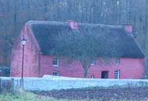

Deux soeurs galloises richissimes ont légué leur impressionnante collection d’œuvres d’art au musée dans les années cinquante.
Résultat : Cardiff héberge une des plus importantes collections de tableaux impressionnistes hors de Paris, avec notamment des œuvres de Renoir, Monet et Cézanne. (Entrée gratuite, fermé les lundis)
Le Museum of Welsh

Pour découvrir les arts et traditions galloises, rendez-vous au Museum of Welsh Life de Saint-Fagans, à la sortie Est de Cardiff. Ce musée en plein air reconstitue un village gallois, avec des animations présentant les vieux métiers (forgeron, meunier, tonnelier).
Le programme de festivals et de célébrations y est captivant, on assiste au travail du boulanger et aux danses folkloriques du mât enrubanné. Dans l'enceinte du Village celte, dans les mêmes huttes enfumées, on se sent vivre comme il y a 2000 ans.
Complétant ce musée, un vaste parc abrite une élégante demeure de style Tudor, entourée de jardins.
Le château de Cardiff
Le château s'élève au coeur même de la capitale galloise.
Ses murs puissants renferment une histoire qui s'étale sur presque 2000 ans, depuis l'arrivée des romains au 1er siècle après Jésus-Christ. Après la conquête normande, le donjon du château fut construit ainsi que des fortifications médiévales et des habitations.
Le château devint la propriété de nombreuses families nobles jusqu'au 18ième siécle lorsque la famille de Bute en hérita mariage. Le deuxième marquis de Bute transforma Cardiff en un port d'exporation du charbon le plus grand du monde.
Le château et la fortune de Bute furent légués à son fils John, le troisième marquis, que l'on a décrit comme l'homme le plus riche du monde dans les années 1860.